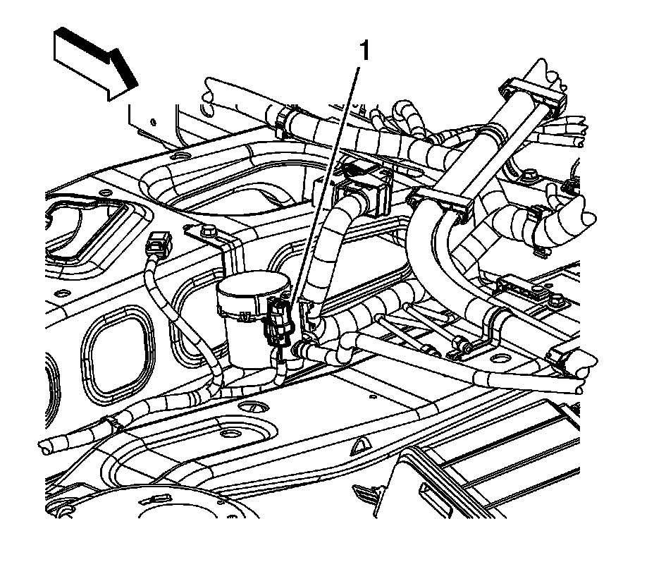
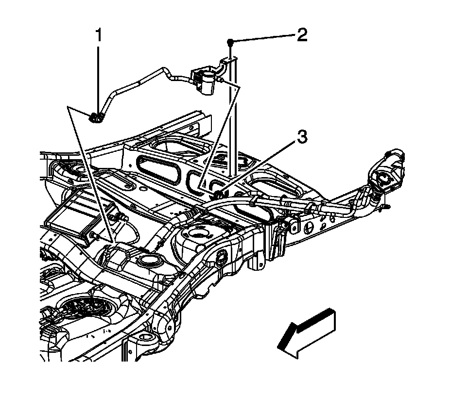
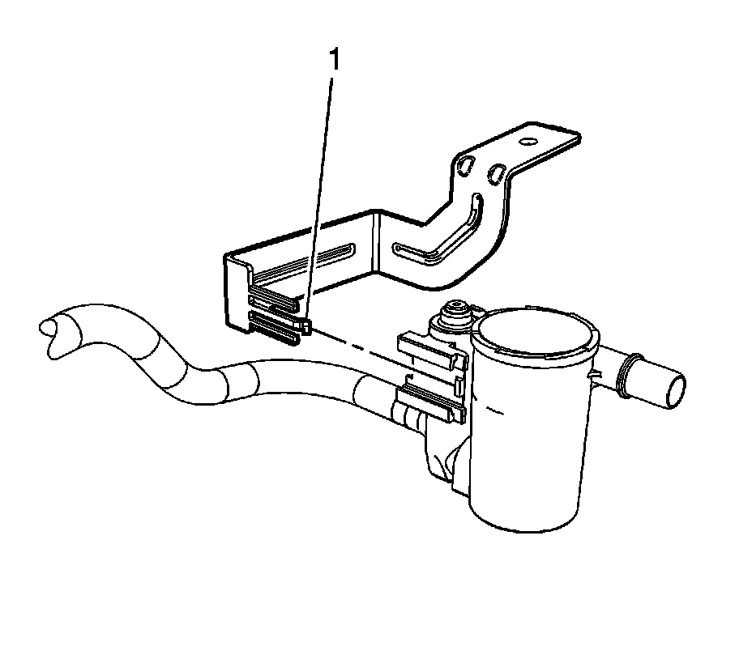

Evaporative Emission Canister Vent Solenoid Valve Replacement (1500 Series)
EVAPORATIVE EMISSION CANISTER VENT SOLENOID VALVE REPLACEMENT (1500 SERIES)
REMOVAL PROCEDURE
IMPORTANT: Clean all evaporative emission (EVAP) line connections and surrounding areas prior to disconnecting, in order to avoid possible EVAP system contamination.

1. Raise and support the vehicle. Refer to Vehicle Lifting.
2. Disconnect the chassis wiring harness electrical connector (1) from the EVAP canister vent solenoid.

3. Disconnect the EVAP canister vent solenoid quick connect fitting (1) from the EVAP canister.
4. Disconnect the fuel fill pipe EVAP line quick connect fitting (3) from the vent solenoid.

5. Disengage the retainer (1) securing the EVAP canister vent solenoid to the bracket.
6. Remove the EVAP canister vent solenoid.
INSTALLATION PROCEDURE
1. Install the EVAP canister vent solenoid.
2. Slide the EVAP canister vent solenoid onto the bracket until the retainer (1) engages the clip.
3. Connect the EVAP canister vent solenoid quick connect fitting (1) to the EVAP canister.
4. Connect the fuel fill pipe EVAP line quick connect fitting (3) to the vent solenoid.
5. Connect the chassis wiring harness electrical connector (1) to the EVAP canister vent solenoid.
6. Lower the vehicle.